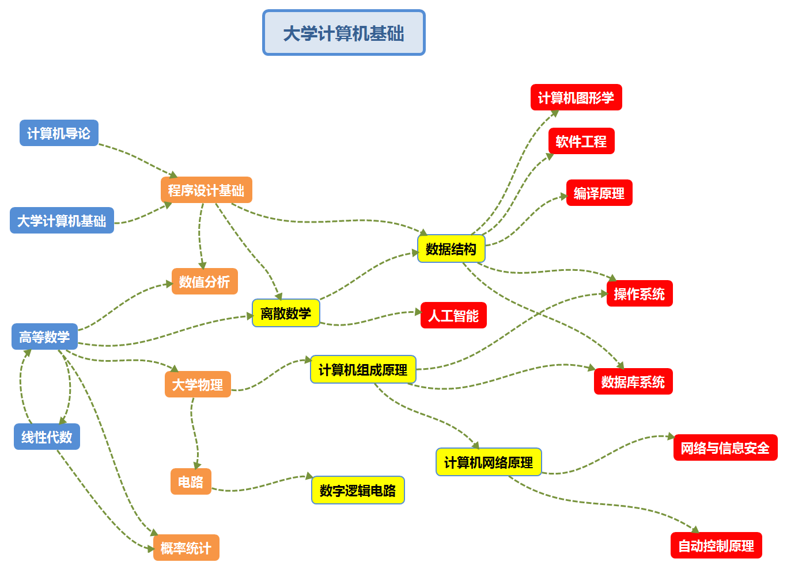

之前对计算机专业的认识基本停留在编程，使用软件，电脑硬件等方面，后来才发现计算机的专业如果细分的话覆盖面十分之广，应用于生活和生产的方方面面。 “计算机”这一名称起源于计算机刚出生之时的用途，也就是科学计算，但如今计算机的功能大大拓展，如数据，文字，图像，图片，声音等的处理。而如何使计算机技术更进一步，则是计算机专业的学生所要面对的问题。 今后计算机技术的发展将表现为高性能化、网络化、大众化、智能化等等特点，也必然成为社会的主流趋势之一，因此我们需要不断学习，不断更新，才能为社会贡献自己的力量。
首先在大一的时候好好学习基本课程为之后的专业课程打下基础，并且不忘了解相关专业的现况和发展前景，为了之后的选专业做准备，我比较感兴趣的是人工智能和网络安全之类的专业，会向着这些专业了解。 大二在选好专业之后，对就业方向或研究方向做了解与准备，并适当接触专业的技能，培养自己丰富的经验，并尽量参加各种比赛，锻炼自己的各项能力，并为之后的考研做准备。 大三着重提高自己的专业技能，适当参加一些实习工作，为学习生活增添经验。